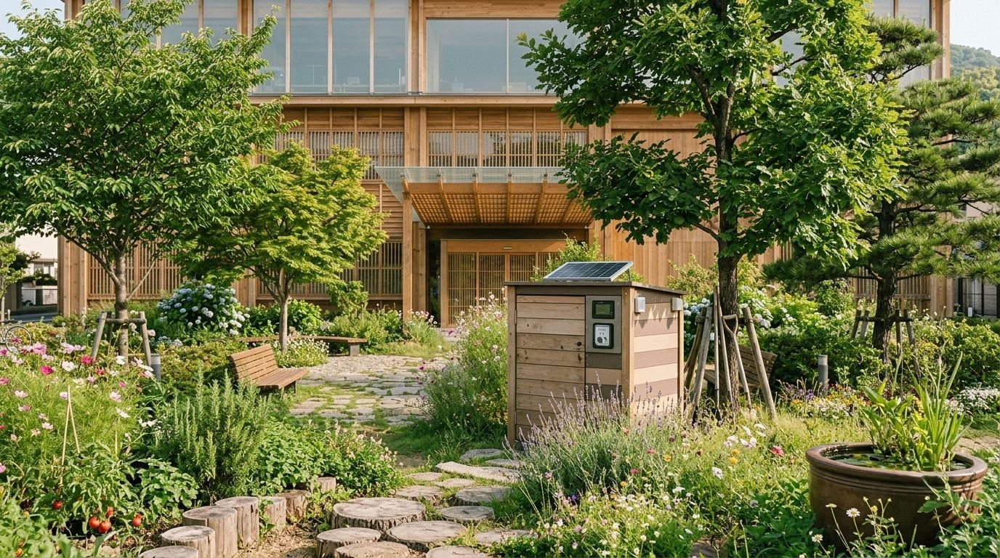

ピコぬ市では、家庭から生まれる有機資源を廃棄物としてではなく、貴重な地域資源として捉えています。 暮らしと循環推進課では、市民参加型の堆肥化事業「ネオ堆肥ボックス」を通じて、家庭から出る有機資源を街の土へと戻す取り組みを進めています。
市役所前・市民循環ステーション
市役所正面には、どなたでもご利用いただけるネオ堆肥ボックスを設置しています。市民の皆さまが持ち寄った有機資源は 適切な発酵処理を行い、完成した堆肥は無料で市民の皆さまへ配布しています。
ご利用の流れ
| 1. 分別 | ご家庭で出た有機資源を分別してください |
|---|---|
| 2. 投入 | 回収ボックスへ投入してください |
| 3. 発酵・熟成 | 一定期間、発酵・熟成を行います |
| 4. 持ち帰り | 完成した堆肥を庭や家庭菜園へご利用いただけます |
ご利用案内
| 設置場所 | 市役所正面 市民循環ステーション |
|---|---|
| 利用時間 | 市役所開庁時間中(平日 8:30〜17:15) |
| 費用 | 無料 |
| 投入できる有機資源 | 野菜くず、果物の皮、茶がらなど(肉類・魚類・油分を含むものは対象外) |
Pioカードをお持ちの方は、ネオ堆肥ボックスご利用の際にご提示いただくと、資源循環への参加記録として保存されます。Pioカードについて詳しくはこちら >
堆肥の配布
完成した堆肥は、市民循環ステーションにて、市民の皆さまへ無料で配布しています。配布状況は日によって異なりますので、あらかじめご了承ください。